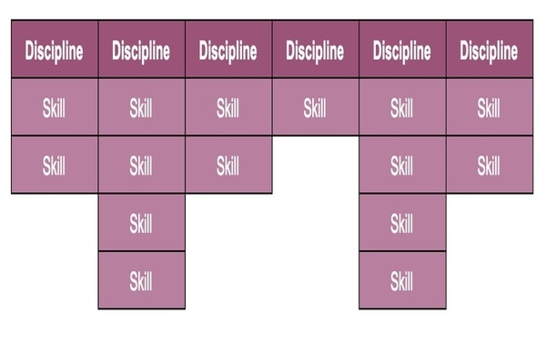
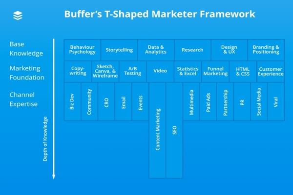
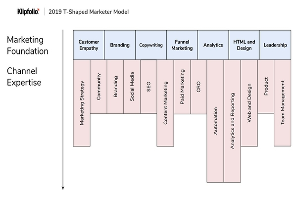

C’est quoi le T-shape marketing ?

Le modèle du Marketeur T-shaped
Comment découvrir la spécialisation en Marketing Digital faite pour vous.
Le marketing constitue un domaine très vaste, ce qui signifie qu’il y a beaucoup de spécialisations possibles en tant que marketeur. On va à l’école pour découvrir plein de choses, mais c’est au fur et à mesure de sa carrière qu’on a l’occasion de se faire une idée du domaine dans lequel on est à l’aise et qui nous passionne le plus.
Le modèle du T-shaped marketeur est là pour aider à identifier quelles sont les compétences fondamentales dont vous avez besoin et sur quels canaux vous pouvez devenir expert.
Le modèle du T-Shaped marketeur
Pour faire court, un marketer T-Shaped a les notions de base des compétences essentielles en marketing et se spécialise dans un ou plusieurs axes principaux.
Ce modèle est utile pour vous aider à vous faire une idée de votre profil et de celui de vos collaborateurs pour déterminer où se trouvent les points forts de votre équipe et quels domaines sont à externaliser.
Le modèle du t-shaped marketeur a connu plusieurs versions et mises à jour, comme celles de Moz en 2013, Brian Balfour en 2013, de Buffer en 2017, Growth Tribe en 2018 et bien d’autres.
Avec un niveau de complexité élevé, le modèle du marketer T-shaped ressemblerait à cela:

Plus précisément, un diagramme T-Shaped type se rapproche de cet exemple fait par Buffer.

Mais en quoi consiste le travail d’un marketeur T-Shaped exactement?
Commençons par découvrir le travail des marketeur T-Shaped dans le détail. Les Marketer t-shaped ont des compétences qui couvrent les notions essentielles du marketing, comme le montre la barre horizontale du T. La barre verticale du T représente le degré de connaissance et d’expertise dans des domaines spécifiques. Par exemple, une personne peut être définie par des branches plus longues en marketing de contenu et en branding, à l’inverse du web design.
Le concept des Marketeurs T-shaped vient du monde de la RH. Le T décrit la portée et l’étendue des capacités de quelqu’un. Quel est votre degré de connaissance? Quelle est la qualité de votre connaissance?
Les Marketeurs T-Shaped complètent les équipes avec toute personne capable de soutenir les autres membres et de prendre la direction des projets dans lesquels elle s’y connaît bien.
Les fondements du marketing
Les connaissances élémentaires des matières fondamentales en marketing constituent la partie la plus importante du modèle. Tout marketeur se doit de persévérer afin d’acquérir au minimum les bases de celles-ci.
Voici les matières en marketing dont vous pouvez vous servir dans plusieurs voire dans tous les canaux.
Choisir ses matières de prédilection
Il s’agit de la partie amusante. Cela désigne tous les domaines que vous pouvez explorer pour générer de la croissance. Les choses changent très rapidement dans chaque canal. De nouveaux outils, de nouvelles manières de faire, de nouveaux résultats, de nouveaux règlements. On ne peut pas être un expert de chaque canal.
Ainsi, la plupart des Marketeurs T-Shaped ont de bonnes bases et une approche générale de chaque canal. Ils connaissent les avantages et les inconvénients de chaque canal mais sont aussi dotés d’une forte expertise dans certains.
Comment notre équipe marketing est-elle constituée?
A Klipfolio, le directeur Marketing a choisi son équipe en se basant sur ces stratégies. Parmi nos 10 membres, nous disposons d’expertises clé en rédaction de site, optimisation du taux de conversion, en community management, SEO, graphisme, conception de site web et en automation.
Comment cela s’applique-t-il aux équipes marketing aujourd’hui?
Une équipe marketing ”classique” apparaît très cloisonnée.
Dans le cadre d’un marketing moderne, un marketing efficace est permis par la capacité de chaque membre à avoir conscience du ”fit” des autres membres de l’équipe, et à cerner comment ce qu’ils apportent s’emboîte avec ce que les autres font.
Quel que soit votre niveau, il est important de poser les bonnes questions qui prennent en compte les autres membres de l’équipe et les personnes d’autres équipes, et de le faire au bon moment. Cela garantit que chaque personne engagée sache que sa responsabilité dans la réalisation d’un projet marketing est clé.
Ceci est la raison pour laquelle nous avons besoin de marketeurs t-shaped ouverts d’esprit, opérationnels, de personnes prenant des décisions en ayant à l’esprit la variété de profils de l’équipe.
Notre vision du marketeur t-shaped en 2020
Comme le marketing digital est en constante évolution, nous avons pensé qu’il était temps de s’essayer à une mise à jour du diagramme.
Nous avons essayé de lier plusieurs compétences fondamentales avec une chaîne d’expertise.
Par exemple, une approche approfondie de la protection de la propriété intelectuelle peut vous permettre de vous forger une bonne expertise en SEO et dans le marketing de contenu.
Alors qu’avoir des fondamentaux solides en analyse des données peut vous orienter vers l’automation ou le reporting. Certains de nos collaborateurs ont eu l’opportunité d’assister à la conférence sur le Growth Marketing à Toronto, et, après avoir discuté avec beaucoup de personnes de l’industrie pour arriver à un consensus, nous avons élaboré une nouvelle version en nous basant sur le modèle T-Shaped originel.

Avoir de l’empathie pour ses clients
Tout part d’une compréhension de vos consommateurs et de votre clientèle. C’est à ce moment là qu’entrent en jeu la psychlogie comportementale et la recherche.
Comprendre quelles sont les vraies sources d’insatisfaction à résoudre.
Cartographier et posséder tout le parcours client, l’engagement du consommateur, comprendre les déplacements des consommateurs et mettre en place des solutions qui résolvent ces problèmes d’insatisfaction.
Miser sur le branding
Drift prend position et affirme que ”les entreprises ne peuvent plus se différencier sur les caractéristiques dans un monde dans lequel l’offre est infinie. L’image de marque. L’image de marque est le seul vrai avantage marketing. ”
Selon Bezos, le Branding est ”ce que les gens disent de vous quand vous n’êtes plus dans la même pièce”. Le branding est la création d’une dynamique et d’une histoire autour d’une entreprise, transcendant le produit et ses caractéristiques.
Votre marque repose dans l’expérience globale que les personnes obtiennent en interagissant avec votre entreprise et votre produit. Ce n’est pas une chose en particulier mais un tout, fonctionnant à l’unisson.
Le copywriting
Aussi connue sous le nom de storytelling, c’est l’art d’élaborer l’offre pour un certain produit ou service en la façonnant de manière à ce qu’elle soit créative, intéressante et attrayante.
C’est quelque chose que les machine ne sauront jamais bien réaliser. Il s’agit d’une tâche qui requiert un haut niveau d’abstraction, ce dont les machines ne sont pas capables, du moins pour l’instant…
Comprendre un produit, une clientèle, leurs sources de mécontentement et le formuler de manière à fidéliser les consommateurs. Cela a toujours été et restera un fondement du marketing qui peut être utilisé via tous les supports de communication.
Le Funnel Marketing (tunnel de vente en français)
Il est important de suivre les consommateurs du début à la fin de la “customer journey” (voir l’article growth hacking 101) et de définir/tracker clairement chaque étape.
Cela va nous permettre de baliser et de définir les points que conversions importants
L’analyse de données
Il s’agit du principe du test A/B. C’est le processus d’analyse, de transformation et de modélisation des données qui a pour but de collecter des perspectives, d’arriver à des conclusions éclairantes et de prendre une décision.
HTML et Design
Comprendre le code et faire un peu de wireframing c’est crucial.
Sans ces pré requis …impossible de comprendre comment les services et les mécanismes du HTML et CSS, Javascript, jQuery, RESTful coopèrent.
Le Leadership
Le leadership c’est : mettre l’accent est mis sur la gestion des parties prenantes. Savoir former et rendre autonome ses employés La nécessité de montrer l’exemple.
A vous de jouer maintenant
J’espère que le modèle du marketeur T-Shaped vous a donné l’envie de réfléchir aux domaines en marketing dans lesquels vous êtes à l’aise et ceux qui vous tiennent le plus à cœur. Comprendre votre t-shape peut vous aider à déterminer les compétences dans lesquelles vous pouvez vous perfectionner et la direction à prendre pour progresser.